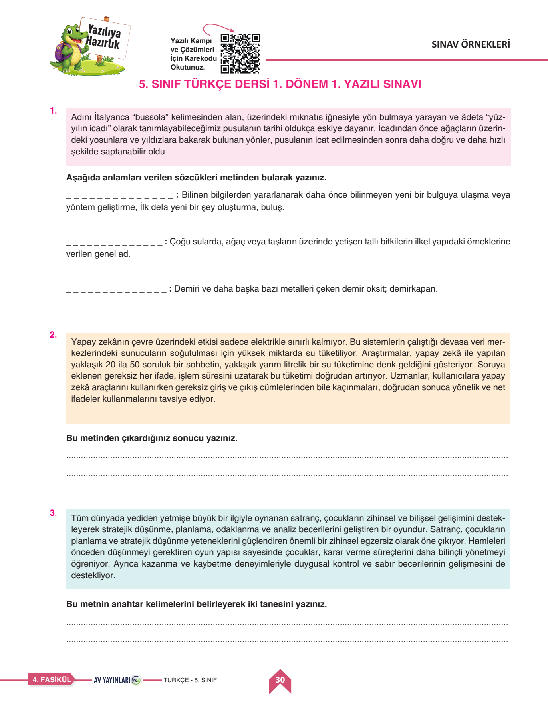
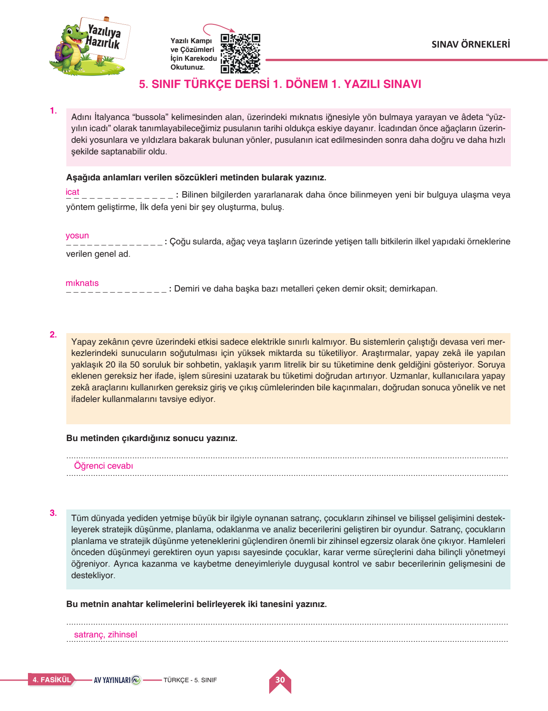
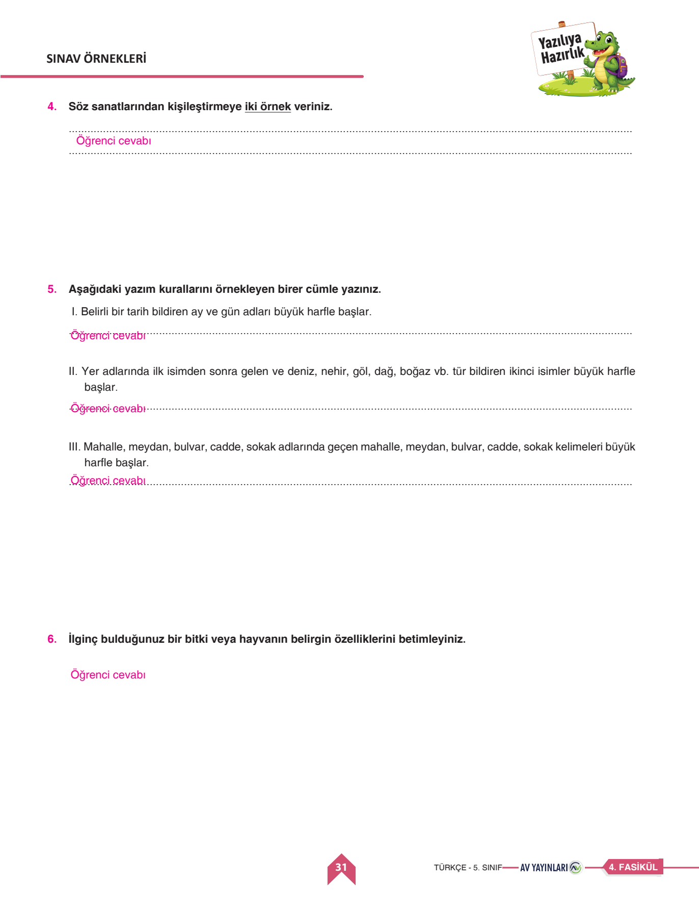

📚 Türkçe 1. Dönem 1. Yazılı
Orijinal Sınav Kağıdı Üzerinde Soru Soru Sesli Çözüm • Metinde Anlam • Söz Sanatları • Yazım Kuralları
0
Mevcut Puan / 100

📌 Soru 1: Metinden Sözcük Bulma (15 Puan)
✅ Resmi Cevap: 1. İcat (Buluş) • 2. Yosun • 3. Mıknatıs (Demirkapan). Metindeki bağlamdan hareketle doğru kelimeler tespit edilir.
Puan Ver:
📌 Soru 2: Metnin Konusu ve Ana Fikri (20 Puan)
✅ Resmi Cevap: Konu: Yapay zekâ veri merkezlerinin aşırı elektrik ve su tüketimiyle çevreye olan etkileri.
Ana Fikir: Teknolojik gelişmeler insanlığa kolaylık sağlarken doğal kaynaklarımızın tükenmemesi için enerji ve su verimliliği gözetilmelidir.
Ana Fikir: Teknolojik gelişmeler insanlığa kolaylık sağlarken doğal kaynaklarımızın tükenmemesi için enerji ve su verimliliği gözetilmelidir.
Puan Ver:
📌 Soru 4: Kişileştirme Sanatına Örnekler (15 Puan)
✅ Örnek Cevap: 1. "Rüzgâr gece boyunca pencerelere kızgın kızgın vurdu." • 2. "Güneş sabah yüzünü gösterdiğinde çiçekler sevinçle gülümsedi."
Puan Ver:
📌 Soru 5: Yazım Kurallarını Örneklendirme (30 Puan)
✅ Örnek Cümleler:
I: "Kardeşim 12 Mayıs 2018 Cumartesi günü doğdu."
II: "Tatilimizi Van Gölü kıyısında geçirdik."
III: "Teyzem Atatürk Bulvarı, Menekşe Sokakta oturuyor."
I: "Kardeşim 12 Mayıs 2018 Cumartesi günü doğdu."
II: "Tatilimizi Van Gölü kıyısında geçirdik."
III: "Teyzem Atatürk Bulvarı, Menekşe Sokakta oturuyor."
Puan Ver:


📖 1. Sözcükte Anlam ve Bağlam
- Gerçek Anlam: Kelimenin akla gelen ilk temel anlamıdır.
- Mecaz Anlam: Gerçek anlamdan tamamen uzaklaşan soyut anlamdır.
- Terim Anlam: Bilim, sanat ve spora özgü kavramlardır.
🎭 2. Söz Sanatları: Kişileştirme (Teşhis)
- İnsana ait özelliklerin hayvanlara veya cansız varlıklara verilmesidir.
- Örnek: "Güneş bize sıcacık tebessüm ediyordu."
✍️ 3. Kritik Yazım Kuralları
- Belirli tarih bildiren gün ve aylar büyük harfle başlar: 29 Ekim 1923, 14 Haziran Pazartesi.
- Özel isimden sonra gelen dağ, göl, nehir isimleri büyük başlar: Van Gölü, Ağrı Dağı.
- Cadde, sokak, meydan, bulvar kelimeleri büyük harfle yazılır: İstiklal Caddesi.